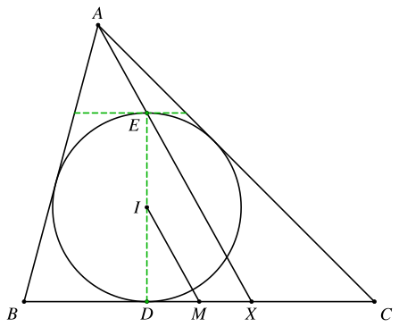
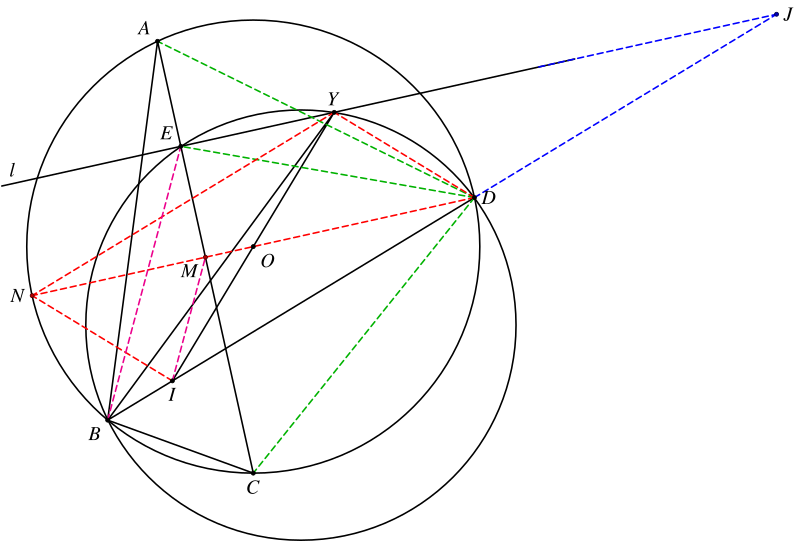

1. 题目
如图，四边形 ABCD 内接于圆 O，AB>BC，E 是 AC 上一点使得 AE<EC。过 E 作 AC 的垂线 l，分别交 △AED、△BED、△CED 的外接圆于另一点 X、Y、Z，且 E、Y、Z、X 依次排列。若 AX=BY=CZ，求证：BD 与 OY 的交点是 △ABC 的内心。
2. 分析
这个题的关键是确定 D 点和 E 点的位置。
从结论可以得出点 D 是 BI 和 △ABC 点外接圆的交点，由鸡爪定理可知 DI=DA=DC。
这一点也比较好证，直接用 AX=CZ 即可证明。
E 点的位置无法直接确定，但是也比较好猜。鸡爪定理的另一个结论是旁心 J 也在射线 BI 上，且 DJ=DI。作出 J 点之后，我们会发现他就在直线 l 上。可知点 E 是旁切圆的切点。
而关于旁切圆的切点，有一个经典的引理：
设 △ABC 的内心为 I，X 是 A− 旁切圆与 BC 的切点，M 是 BC 的中点，则 AX∥IM。
上述引理的证明

设 △ABC 的内切圆与 BC 相切于 D，点 E 是 D 在 △ABC 的内切圆上的对径点，由位似可知 A、E、X 共线。
又 CX=BD，可知 DM=MX，因此 IM 是 △EDX 的中位线，IM∥AX。
我们可以反过来用这个结论，通过构造平行的结论来证明点 E 是旁切圆切点。
接下来证明 I、O、Y 共线。只需要注意到点 O 是 IY 的中点即可。
3. 解答
3.1. 证明点 D 在直线 BI 上
由 ∠AEX=∠CEZ=90∘ 可知 AX、CZ 分别是 △AED、△CED 的外接圆的直径。
连接 DA、DC、DE，有
sin∠DEADA=AX=CZ=sin∠DECDC
可得 DA=DC。
由鸡爪定理可知，△ABC 的内心 I 在 BD 上，且 DI=DA=DC。
接下来为了简化图形，我们可以扔掉 X、Z 两点，AX=BY=CZ 的条件简化为
BY=sin∠DECDC=sin∠DCEDE
3.2. 证明平行
设直线 DO 与 AC 交于点 M，则 M 是 AC 的中点，且 DM⊥AC，因此 DM∥l。
连接 BE、IM，下面证明：BE∥IM。
设直线 BD 和 l 交于点 J，考虑 △JBE 和 △DIM。由 DM∥l 可知 ∠J=∠IDM，因此
∠JBE+∠JEB=∠DIM+∠DMI(i)
设 △BED 的外接圆半径为 R，则
⟹sin∠JEBBY=2R=sin∠JBEDEsin∠JEBsin∠JBE=BYDE=sin∠DCE
在 △DIM 中，
⟹sin∠DIMDM=sin∠DMIDIsin∠DMIsin∠DIM=DIDM=DCDM=sin∠DCE
因此，
sin∠JEBsin∠JBE=sin∠DMIsin∠DIM(ii)
我们构造函数
f(x)=sin(x)sin(θ−x),x∈(0,π),θ∈(2π,π)
则
f′(x)=sin2x−cos(θ−x)sinx−sin(θ−x)cosx=−sin2xsinθ<0
可知 f(x) 在 (0,π) 上单调递减。结合等式(i)和(ii)可知 ∠JEB=∠DMI，∠JBE=∠DIM，因此 BE∥IM。
由上面的引理可知，点 E 是 △ABC 的旁切圆切点，点 J 是 △ABC 的旁心，因此 DJ=DI=DA=DC。
另外，结合 DM∥l 可知 △DIM∼△JBE。
3.3. 证明 O 是 IY 的中点
由 JY⋅JE=JD⋅JB 可知
JYJD=JBJE=DIDM=DCDM=sin∠DCA
于是
JY=sin∠DCAJD=sin∠DCADA=2⋅OD
注意到 DO∥JY，点 D 是 IY 的中点，因此 OD 是 △IJY 的中位线，点 I、O、Y 共线，命题得证。
最后一步的另一种证明方法
连接 DY，由上面可知 △DIM∼△JBE∼△JYD，因此
JYDI=JDDM⟹DI2=DM⋅JY

设直线 DO 与 △ABC 的外接圆的另一个交点为 N，连接 NY、NI。
注意到 DI2=DC2=DM⋅DN，因此 DN=JY，可知四边形 YNDJ 是平行四边形。于是有
YN∥DJYN=DJ=DI
因此四边形 YNID 也是平行四边形，点 O 是对角线 DN 和 IY 的交点。